12. Services Web
12.1. Introduction
Nous avons présenté dans le chapitre précédent plusieurs applications client-serveur Tcp-Ip. Dans la mesure où les clients et le serveur échangent des lignes de texte, ils peuvent être écrits en n'importe quel langage. Le client doit simplement connaître le protocole de dialogue attendu par le serveur.
Les services Web sont également des applications serveur Tcp-Ip. Ils présentent les caractéristiques suivantes :
- Ils sont hébergés par des serveurs web et le protocole d'échanges client-serveur est HTTP (HyperText Transport Protocol), un protocole au-dessus de TCP-IP.
- Le service Web a un protocole de dialogue standard quelque soit le service assuré. Un service Web offre divers services S1, S2, .., Sn. Chacun d'eux attend des paramètres fournis par le client et rend à celui-ci un résultat. Pour chaque service, le client a besoin de savoir :
- le nom exact du service Si
- la liste des paramètres qu'il faut lui fournir et leur type
-
le type de résultat retourné par le service Une fois, ces éléments connus, le dialogue client-serveur suit le même format, quelque soit le service web interrogé. L'écriture des clients est ainsi normalisée.
-
Pour des raisons de sécurité vis à vis des attaques venant de l'internet, beaucoup d'organisations ont des réseaux privés et n'ouvrent sur Internet que certains ports de leurs serveurs : essentiellement le port 80 du service web. Tous les autres ports sont verrouillés. Aussi les applications client-serveur telles que présentées dans le chapitre précédent sont-elles construites au sein du réseau privé (intranet) et ne sont en général pas accessibles de l'extérieur. Loger un service au sein d'un serveur web le rend accessible à toute la communauté internet.
- Le service Web peut être modélisé comme un objet distant. Les services offerts deviennent alors des méthodes de cet objet. Un client peut avoir accès à cet objet distant comme s'il était local. Cela cache toute la partie communication réseau et permet de construire un client indépendant de cette couche. Si celle-ci vient à changer, le client n'a pas à être modifié.
- Comme pour les applications client-serveur Tcp-Ip présentées dans le chapitre précédent, le client et le serveur peuvent être écrits dans un langage quelconque. Ils échangent des lignes de texte. Celles-ci comportent deux parties :
- les entêtes nécessaires au protocole HTTP
- le corps du message. Pour une réponse du serveur au client, celui-ci est au format XML (eXtensible Markup Language). Pour une demande du client au serveur, le corps du message peut avoir plusieurs formes dont XML. La demande XML du client peut avoir un format particulier appelé SOAP (Simple Object Access Protocol). Dans ce cas, la réponse du serveur suit aussi le format SOAP. L'architecture d'une application client / serveur à base d'un service web est la suivante :
 |
C'est une extension de l'architecture 3 couches à laquelle on ajoute des classes de communication réseau spécialisées. On a déjà rencontré une architecture similaire avec l'application client graphique windows / serveur Tcp d'impôts au paragraphe 11.9.1, page 372.
Explicitons ces généralités avec un premier exemple.
12.2. Un premier service Web avec Visual Web Developer
Nous allons construire une première application client / serveur ayant l'architecture simplifiée suivante :
 |
12.2.1. La partie serveur
Nous avons indiqué qu'un service web était hébergé par un serveur web. L'écriture d'un service web entre dans le cadre général de la programmation web, côté serveur. Nous avons eu précédemment l'occasion d'écrire des clients web, ce qui est aussi de la programmation web mais côté client cette fois. Le terme programmation web désigne le plus souvent la programmation côté serveur plutôt que celle côté client. Pour développer des services web ou plus généralement des applications web, Visual C# n'est pas l'outil approprié. Nous allons utiliser Visual Developer l'une des versions Express de Visual Studio 2008 téléchargeables [2] à l'adresse [1] : [http://msdn.microsoft.com/fr-fr/express/future/bb421473(en-us).aspx] (mai 2008) :
 |
- [1] : l'adresse de téléchargement
- [2] : l'onglet des téléchargements
- [3] : télécharger Visual Developer 2008 Pour créer un premier service web, on pourra procéder comme suit, après avoir lancé Visual Developer :
 |
- [1] : prendre l'option File / New Web Site
- [2] : choisir une application de type ASP.NET Web Service
- [3] : choisir le langage de développement : C#
- [4] : indiquer le dossier où créer le projet
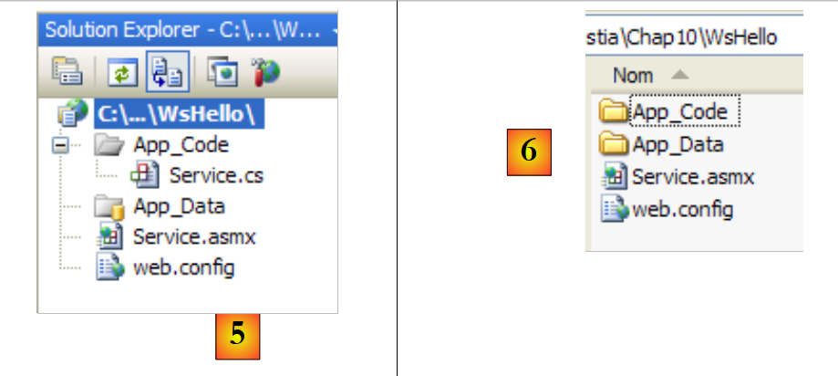 |
- [5] : le projet créé dans Visual Web Developer
-
[6] : le dossier du projet sur le disque Une application web est structurée de la façon suivante dans Web Developer :
-
une racine dans laquelle on trouve les documents du site web (pages web statiques Html, images, pages web dynamiques .aspx, services web .asmx, ...). On y trouve également le fichier [web.config] qui est le fichier de configuration de l'application web. Il joue le même rôle que le fichier [App.config] des applications windows et est structuré de la même façon.
- un dossier [App_Code] dans lequel on trouve les classes et interfaces du site web destinées à être compilées.
- un dossier [App_Data] dans lequel on mettra des données exploitées par les classes de [App_Code]. On pourra par exemple y trouver une base SQL Server *.mdf. [Service.asmx] est le service web dont nous avons demandé la création. Il ne contient que la ligne suivante :
Le code-source ci-dessus est destiné au serveur Web qui hébergera l'application. En mode production, ce serveur est en général IIS (Internet Information Server), le serveur web de Microsoft. Visual Web Developer embarque un serveur web léger qui est utilisé en mode développement. La directive précédente indique au serveur web :
- [Service.asmx] est un service Web (directive WebService)
- écrit en C# (attribut Language)
- que le code C# du service web se trouve dans le fichier [~/App_Code/Service.cs] (attribut CodeBehind). C'est là qu'ira le chercher le serveur web pour le compiler.
- que la classe implémentant le service web s'appelle Service (attribut Class) Le code C# [Service.cs] du service web généré par Visual Developer est le suivant :
La classe Service ressemble à une classe C# classique avec cependant quelques points à noter :
- ligne 7 : la classe dérive de la classe WebService définie dans l'espace de noms System.Web.Services. Cet héritage n'est pas toujours obligatoire. Dans cet exemple notamment on pourrait s'en passer.
- ligne 3 : la classe elle-même est précédée d'un attribut [WebService(Namespace="http://tempuri.org/")] destiné à donner un espace de noms au service web. Un vendeur de classes donne un espace de noms à ses classes afin de leur donner un nom unique et éviter ainsi des conflits avec des classes d'autres vendeurs qui pourraient porter le même nom. Pour les services Web, c'est pareil. Chaque service web doit pouvoir être identifié par un nom unique, ici par http://tempuri.org/. Ce nom peut être quelconque. Il n'a pas forcément la forme d'une Uri Http.
- ligne 15 : la méthode HelloWorld est précédée d'un attribut [WebMethod] qui indique au compilateur que la méthode doit être rendue visible aux clients distants du service web. Une méthode non précédée de cet attribut n'est pas visible par les clients du service web. Ce pourrait être une méthode interne utilisée par d'autres méthodes mais pas destinée à être publiée.
- ligne 9 : le constructeur du service web. Il est inutile dans notre application. La classe [Service.cs] générée est transformée de la façon suivante :
Le fichier de configuration [web.config] généré pour l'application web est le suivant :
Le fichier fait 140 lignes. Il est complexe et nous ne le commenterons pas. Nous le garderons tel quel. Ci-dessus, on retrouve les balises <configuration>, <configSections>, <sectionGroup>, <appSettings>, <connectionString> que nous avons rencontrées dans le fichier [App.config] des applications windows.
Nous avons un service web opérationnel qui peut être exécuté :
 |
- [1,2] : on clique droit sur [Service.asmx] et on demande à voir la page dans un navigateur
- [3] : Visual Web Developer lance son serveur web intégré et met l'icône de celui-ci en bas à droite dans la barre des tâches. Le serveur web est lancé sur un port aléatoire, ici 1906. L'Uri affichée /WsHello est le nom du site web [4]. Visual Web Developer a également lancé un navigateur pour afficher la page demandée à savoir [Service.asmx] :
 |
- en [1], l'Uri de la page. On retrouve l'Uri du site [http://localhost:1906/WsHello] suivi de celle de la page /Service.asmx.
- en [2], le suffixe .asmx a indiqué au serveur web qu'il s'agissait non pas d'une page web normale (suffixe .aspx) donnant naissance à une page Html, mais de la page d'un service web. Il génère alors de façon automatique une page web présentant un lien pour chacune des méthodes du service web ayant l'attribut [WebMethod]. Ces liens sont des liens permettant de tester les méthodes. Un clic sur le lien [2] ci-dessus nous amène à la page suivante :
 |
- en [1], on notera l'Uri [http://localhost:1906/WsHello/Service.asmx?op=DisBonjourALaDame] de la nouvelle page. C'est l'Uri du service web avec un paramètre op=M, où M est le nom d'une des méthodes du service web.
- Rappelons la signature de la méthode [DisBonjourALaDame] :
La méthode admet un paramètre de type string et rend un résultat de type string également. La page nous permet d'exécuter la méthode [DisBonjourALaDame] : en [2] on met la valeur du paramètre nomDeLaDame et en [3], on demande l'exécution de la méthode. Nous obtenons le résultat suivant :
 |
- en [1], on notera que l'Uri de la réponse n'est pas identique à celle de la demande. Elle a changé.
- en [2], la réponse du serveur web. On notera les points suivants :
- c'est une réponse XML et non HTML
- le résultat de la méthode [DisBonjourALaDame] est encapsulé dans une balise <string> représentant son type.
- la balise <string> a un attribut xmlns (xml name space) qui est l'espace de noms que nous avons donné à notre service web (ligne 1 ci-dessous).
Pour savoir comment le navigateur web a fait sa demande, il faut regarder le code Html du formulaire de test :
- ligne 11 : les valeurs du formulaire (balise form) seront postées (attribut method) à l'Url [ http://localhost:1906/WsHello/Service.asmx/DisBonjourALaDame] (attribut action).
- ligne 19 : le champ de saisie s'appelle nomDeLaDame (attribut name). Demander l'exécution du service web [/Service.asmx] nous a permis de tester ses méthodes et d'avoir un minimum de compréhension des échanges client serveur.
12.2.2. La partie client
 |
Il est possible d'implémenter le client du service web distant ci-dessus avec un client Tcp-Ip basique. Voici par exemple le dialogue client / serveur réalisé avec un client putty connecté au service web distant (localhost,1906) :
- lignes 1-5 : messages envoyés par le client putty
- ligne 1 : commande POST
- lignes 6-10 : réponse du serveur. Elle signifie que le client peut envoyer les valeurs du POST.
- ligne 11 : les valeurs postées sous la forme param1=val1¶m2=val2& .... Certains caractères doivent être en caractères acceptables dans une Url. C'est ce qu'on a appelé précédemment une Url encodée. Ici le formulaire n'a qu'un unique paramètre nommé nomDeLaDame. La valeur postée a au total 23 caractères. Cette taille doit être déclarée dans l'entête Http de la ligne 4.
- lignes 12-22 : la réponse du serveur
- ligne 22 : le résultat de la méthode web [DisBonjourALaDame]. Avec Visual C#, il est possible de générer à l'aide d'un assistant le client d'un service web distant. C'est ce que nous voyons maintenant.
 |
La couche [1] ci-dessus est implémentée par un projet Visual studio C# de type Application Windows et nommé ClientWsHello :
 |
- en [1], le projet ClientWsHello dans Visual C#
- en [2], l'espace de noms par défaut du projet sera Client (clic droit sur le projet / Properties / Application). Cet espace de noms va servir à construire l'espace de noms du client qui va être généré.
- en [3], clic droit sur le projet pour lui ajouter une référence à un service web distant
 |
- en [4], mettre l'Uri du service web construit précédemment
- en [4b], connecter Visual C# au service web désigné par [4]. Visual C# va récupérer la description du service web et grâce à cette description va pouvoir en générer un client.
- en [5], une fois la description du service web récupérée, Visual C# peut en afficher les méthodes publiques
- en [6], indiquer un espace de noms pour le client qui va être généré. Celui-ci sera ajouté à l'espace de noms défini en [2]. Ainsi l'espace de noms du client sera Client.WsHello.
- en [6b] valider l'assistant.
- en [7], la référence au service web WsHello apparaît dans le projet. Par ailleurs, un fichier de configuration [app.config] a été créé.
- en [8], visualiser tous les fichiers du projet.
-
en [9], la référence au service web WsHello contient divers fichiers que nous n'expliciterons pas. Nous jetterons cependant un coup d'oeil sur le fichier [Reference.cs] qui est le code C# du client généré :
-
ligne 1 : l'espace de nom du client généré est Client.WsHello. Si on souhaite changer cet espace de noms, c'est là qu'il faut le faire.
-
ligne 3 : la classe ServiceSoapClient est la classe du client généré. C'est une classe proxy dans le sens où elle va cacher à l'application windows le fait qu'un service web distant est utilisé. L'application windows va utiliser la classe WsHello distante via la classe locale Client.WsHello.ServiceSoapClient. Pour créer une instance du client, on utilisera le constructeur de la ligne 5 :
-
ligne 8 : la méthode DisBonjourALaDame est le pendant, côté client, de la méthode DisBonjourALaDame du service web. L'application windows utilisera la méthode distante DisBonjourALaDame via la méthode locale Client.WsHello.ServiceSoapClient.DisBonjourALaDame sous la forme suivante :
Le fichier [app.config] généré est le suivant :
De ce fichier, nous ne retiendrons que la ligne 8 qui contient l'Uri du service web. Si celui-ci change d'Uri, le client windows n'a pas à être reconstruit. Il suffit de changer l'Uri du fichier [app.config].
Revenons à l'architecture de l'application windows que nous voulons construire :
 |
Nous avons construit la couche [client] du service web. La couche [ui] sera la suivante :
 |
n° | type | nom | rôle |
1 | TextBox | textBoxNomDame | nom de la dame |
2 | Button | buttonSalutations | pour se connecter au service web WsHello distant et interroger la méthode DisBonjourALaDame. |
3 | Label | labelBonjour | le résultat renvoyé par le service web |
Le code du formulaire [Form1.cs] est le suivant :
- ligne 15 : le client du service web est instancié. Il est de type Client.WsHello.ServiceSoapClient. L'espace de noms Client.WsHello est déclaré ligne 3. La méthode locale ServiceSoapClient().DisBonjourALaDame est appelée. On sait qu'elle même interroge la méthode distante de même nom du service web.
12.3. Un service Web d'opérations arithmétiques
Nous allons construire une seconde application client / serveur ayant de nouveau l'architecture simplifiée suivante :
 |
Le service web précédent offrait une unique méthode. Nous considérons un service Web qui offrira les 4 opérations arithmétiques :
- ajouter(a,b) qui rendra a+b
- soustraire(a,b) qui rendra a-b
- multiplier(a,b) qui rendra a*b
- diviser(a,b) qui rendra a/b et qui sera interrogé par l'interface graphique suivante :
 |
- en [1], l'opération à faire
- en [2,3] : les opérandes
- en [4], le bouton d'appel du service web
- en [5], le résultat rendu par le service web
12.3.1. La partie serveur
Nous construisons un projet de type service web avec Visual Web Developer :
 |
- en [1], l'application web WsOperations générée
- en [2], l'application web WsOperations relookée de la façon suivante :
- la page web [Service.asmx] a été renommée [Operations.asmx]
- la classe [Service.cs] a été renommée [Operations.cs]
- le fichier [web.config] a été supprimé afin de montrer qu'il n'est pas indispensable. La page web [Service.asmx] contient la ligne suivante :
Le service web est assuré par classe [Operations.cs] suivante :
Pour mettre en ligne le service web, nous procédons comme indiqué en [3]. Nous obtenons alors la page de test des 4 méthodes du service web WsOperations :

Le lecteur est invité à tester les 4 méthodes.
12.3.2. La partie client
 |
Avec Visual C# nous créons une application Windows ClientWsOperations :
 |
- en [1], le projet ClientWsOperations dans Visual C#
- en [2], l'espace de noms par défaut du projet sera Client (clic droit sur le projet / Properties / Application). Cet espace de noms va servir à construire l'espace de noms du client qui va être généré.
- en [3], clic droit sur le projet pour lui ajouter une référence à un service web existant
 |
- en [4], mettre l'Uri du service web construit précédemment. Il faut pour cela regarder ce qui est affiché dans le champ adresse du navigateur qui affiche la page de test du service web.
- en [4b], connecter Visual C# au service web désigné par [4]. Visual C# va récupérer la description du service web et grâce à cette description va pouvoir en générer un client.
- en [5], une fois la description du service web récupérée, Visual C# peut en afficher les méthodes publiques
- en [6], indiquer un espace de noms pour le client qui va être généré. Celui-ci sera ajouté à l'espace de noms défini en [2]. Ainsi l'espace de noms du client sera Client.WsOperations.
- en [6b] valider l'assistant.
-
en [7], la référence au service web WsOperations apparaît dans le projet. Par ailleurs, un fichier de configuration [app.config] a été créé. On rappelle que le client généré est de type Client.WsOperations.OperationsSoapClient où
-
Client.WsOperations est l'espace de noms du client du service web
- Operations est la classe du service web distant. Même s'il y a une façon logique de construire ce nom, il est souvent plus simple de le retrouver dans le fichier [Reference.cs] qui est un fichier caché par défaut. Son contenu est le suivant :
Les méthodes Ajouter, Soustraire, Multiplier, Diviser du service web distant seront accédées via les méthodes proxy de même nom (lignes 8, 12, 16, 20) du client de type Client.WsOperations.OperationsSoapClient (ligne 3).
Il nous reste à construire l'interface graphique :
 |
n° | type | nom | rôle |
1 | ComboBox | comboBoxOperations | liste des opérations arithmétiques |
2 | TextBox | textBoxA | nombre a |
3 | TextBox | textBoxB | nombre b |
4 | Button | buttonExécuter | interroge le service web distant |
5 | Label | labelRésultat | le résultat de l'opération |
Le code de [Form1.cs] est le suivant :
- ligne 3 : l'espace de noms du client du service web distant
- ligne 10 : le client du service web distant est instancié en même temps que le formulaire
- lignes 17-21 : le combo des opérations est rempli lors du chargement initial du formulaire
- ligne 23 : exécution de l'opération demandée par l'utilisateur
- lignes 25-37 : on vérifie que les saisies a et b sont bien des nombres réels
- lignes 41-54 : un switch pour exécuter l'opération distante demandée par l'utilisateur
- lignes 43, 46, 49, 52 : c'est le client local qui est interrogé. De façon transparente, ce dernier interroge le service web distant.
12.4. Un service web de calcul d'impôt
Nous reprenons l'application de calcul d'impôt maintenant bien connue. La dernière fois que nous avons travaillé avec, nous en avions fait un serveur Tcp distant qu'on pouvait appeler sur l'internet. Nous en faisons maintenant un service web.
L'architecture de la version 8 était la suivante :
 |
L'architecture de la version 9 sera similaire :
 |
C'est une architecture similaire à celle de la version 8 étudiée au paragraphe 11.9.1, page 372 mais où le serveur et le client Tcp sont remplacés par un service web et son client proxy. Nous allons reprendre intégralement les couches [ui], [metier] et [dao] de la version 8.
12.4.1. La partie serveur
Nous construisons un projet de type service web avec Visual Web Developer :
 |
- en [1], l'application web WsImpot générée
- en [2], l'application web WsImpot relookée de la façon suivante :
- la page web [Service.asmx] a été renommée [ServiceImpot.asmx]
- la classe [Service.cs] a été renommée [ServiceImpot .cs] La page web [ServiceImpot.asmx] contient la ligne suivante :
Le service web est assuré par classe [ServiceImpot.cs] suivante :
Le service web n'exposera que la méthode CalculerImpot de la ligne 9.
Revenons à l'architecture client / serveur de la version 8 :
 |
Le projet Visual studio du serveur [1] était le suivant :
 |
- en [1], le projet. On y trouvait les éléments suivants :
- [ServeurImpot.cs] : le serveur Tcp/Ip de calcul de l'impôt sous la forme d'une application console.
- [dbimpots.sdf] : la base de données SQL Server compact de la version 7 décrite au paragraphe 9.8.5, page 266.
- [App.config] : le fichier de configuration de l'application.
- en [2], le dossier [lib] contient les DLL nécessaires au projet :
- [ImpotsV7-dao] : la couche [dao] de la version 7
- [ImpotsV7-metier] : la couche [metier] de la version 7
- [antlr.runtime, CommonLogging, Spring.Core] pour Spring
- en [3], les références du projet Les couches [metier] et [dao] de la version existent déjà : ce sont celles utilisées dans les versions 7 et 8. Elles sont sous forme de DLL que nous intégrons au projet de la façon suivante :
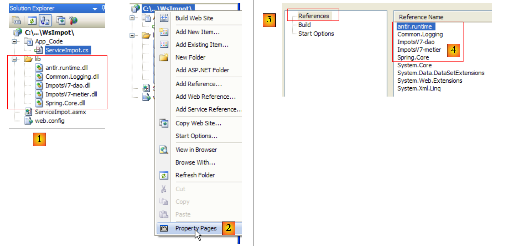 |
- en [1] le dossier [lib] du serveur de la version 8 a été recopié dans le projet du service web de la version 9.
- en [2] on modifie les propriétés de la page pour ajouter les DLL du dossier [lib] [4] aux références du projet [3]. Après cette opération, nous avons la totalité des couches nécessaires au serveur [1] ci-dessous :
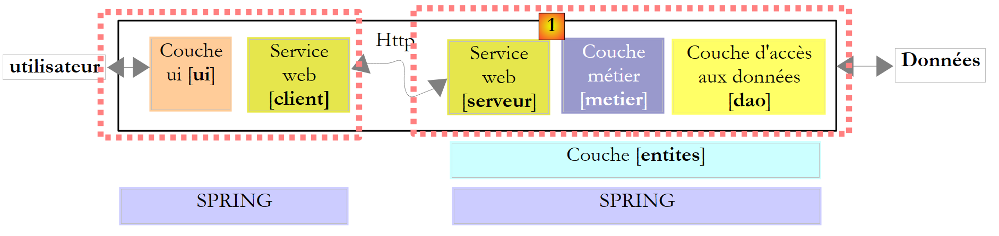 |
Si les éléments du serveur [1], [serveur], [metier], [dao], [entites], [spring] sont bien tous présents dans le projet Visual Studio, il nous manque l'élément qui va les instancier au démarrage de l'application web. Dans la version 8, une classe principale ayant la méthode statique [Main] faisait le travail d'instancier les couches avec l'aide de Spring. Dans une application web, la classe capable de faire un travail analogue est la classe associée au fichier [Global.asax] :
 |
- en [1], on ajoute un nouvel élément au projet web
- en [2], on choisit le type Global Application Class
- en [3], le nom proposé par défaut pour cet élément
- en [4], on valide l'ajout
- en [5], le nouvel élément a été intégré dans le projet Regardons le contenu du fichier [Global.asax] :
Le fichier est un mélange de balises à destination du serveur web (lignes 1, 3, 30) et de code C#. Cette méthode était la seule utilisée avec ASP, l'ancêtre de ASP.NET qui est la technologie actuelle de Microsoft pour la programmation web. Avec ASP.NET, cette méthode est toujours utilisable mais n'est pas la méthode par défaut. La méthode par défaut est la méthode dite du "CodeBehind" et qu'on a rencontrée dans les pages des services web, par exemple ici dans [ServiceImpot.asmx] :
L'attribut CodeBehind précise où se trouve le code source de la page [ServiceImpot.asmx]. Sans cet attribut, le code source serait dans la page [ServiceImpot.asmx] avec une syntaxe analogue à celle trouvée dans [Global.asax]. Nous ne garderons pas le fichier [Global.asax] tel qu'il a été généré mais son code nous permet de comprendre à quoi il sert :
- la classe associée à Global.asax est instanciée au démarrage de l'application. Sa durée de vie est celle de l'application tout entière. Concrètement, elle ne disparaît que lorsque le serveur web est arrêté.
- la méthode Application_Start est exécutée ensuite. C'est la seule fois où elle le sera. Aussi l'utilise-t-on pour instancier des objets partagés entre tous les utilisateurs. Ces objets sont placés :
- soit dans des champs statiques de la classe associée à Global.asax. Cette classe étant présente de façon permanente, toute requête de tout utilisateur peut y lire des informations.
- soit le conteneur Application. Ce conteneur est lui aussi créé au démarrage de l'application et sa durée de vie est celle de l'application.
- pour mettre une donnée dans ce conteneur, on écrit Application["clé"]=valeur;
- pour la récupérer, on écrit T valeur=(T)Application["clé"]; où T est le type de valeur.
- la méthode Session_Start est exécutée à chaque fois qu'un nouvel utilisateur fait une requête. Comment reconnaît-on un nouvel utilisateur ? Chaque utilisateur (un navigateur le plus souvent) reçoit à l'issue de sa première requête, un jeton de session qui est une chaîne de caractères unique pour chaque utilisateur. Ensuite, l'utilisateur renvoie le jeton de session qu'il a reçu à chaque nouvelle requête qu'il fait. Ceci permet au serveur web de le reconnaître. Au fil des différentes requêtes d'un même utilisateur, des données qui lui sont propres peuvent être mémorisées dans le conteneur Session :
- pour mettre une donnée dans ce conteneur, on écrit Session["clé"]=valeur;
-
pour la récupérer, on écrit T valeur=(T)Session["clé"]; où T est le type de valeur. La durée de vie d'une session est limitée par défaut à 20 mn d'inactivité de l'utilisateur (c.a.d. qu'il n'a pas renvoyé son jeton de session depuis 20 mn).
-
la méthode Application_Error est exécutée lorsqu'une exception non gérée par l'application web remonte jusqu'au serveur web.
- les autres méthodes sont plus rarement utilisées. Après ces généralités, à quoi peut nous servir Global.asax ? Nous allons utiliser sa méthode Application_Start pour initialiser les couches [metier], [dao] et [entites] contenues dans les DLL [ImpotsV7-metier, ImpotsV7-dao]. Nous utiliserons Spring pour les instancier. Les références des couches ainsi créées seront ensuite mémorisées dans des champs statiques de la classe associée à Global.asax.
Première étape, nous déportons le code C# de Global.asax dans une classe à part. Le projet évolue de la façon suivante :
 |
En [1], le fichier [Global.asax] va être associé à la classe [Global.cs] [2] en ayant l'unique ligne suivante :
L'attribut Inherits="WsImpot.Global" indique que la classe associée à Global.asax hérite de la classe WsImpot.Global. Cette classe est définie dans [Global.cs] de la façon suivante :
- ligne 4 : l'espace de noms de la classe
- ligne 6 : la classe Global. On peut lui donner le nom qu'on veut. L'important est qu'elle dérive de la classe System.Web.HttpApplication.
- ligne 9 : un champ statique public qui va contenir une référence sur la couche [metier].
- ligne 12 : la méthode Application_Start qui va être exécutée au démarrage de l'application.
- ligne 15 : Spring est utilisé pour exploiter le fichier [web.config] dans lequel il va trouver les objets à instancier pour créer les couches [metier] et [dao]. Il n'y a aucune différence entre l'utilisation de Spring avec [App.config] dans une application windows, et celle de Spring avec [web.config] dans une application web. [web.config] et [App.config] ont par ailleurs la même structure. La ligne 15 range la référence de la couche [metier] dans le champ statique de la ligne 9, afin que cette référence soit disponible pour toutes les requêtes de tous les utilisateurs. Le fichier [web.config] sera le suivant :
C'est le fichier [App.config] utilisée dans la version 7 de l'application et étudiée au paragraphe 9.8.4, page 264.
- lignes 16-20 : définissent une couche [dao] travaillant avec une base de données MySQL5. Cette base de données a été décrite au paragraphe 9.8.1, page 257.
- lignes 21-23 : définissent la couche [metier] Revenons au puzzle du serveur :
 |
Au démarrage de l'application, les couches [metier] et [dao] ont été instanciées. La durée de vie des couches est celle de l'application elle-même. Quand est instancié le service web ? En fait à chaque requête qu'on lui fait. A la fin de la requête, l'objet qui l'a servie est supprimé. Un service web est donc à première vue sans état. Il ne peut mémoriser des informations entre deux requêtes dans des champs qui lui appartiendraient. Il peut en mémoriser dans la session de l'utilisateur. Pour cela, les méthodes qu'il expose doivent être taguées avec un attribut spécial :
Ci-dessus, la ligne 1 autorise la méthode CalculerImpot à avoir accès au conteneur Session dont nous avons parlé précédemment. Nous n'aurons pas à utiliser cet attribut dans notre application. Le service web WsImpot sera donc instancié à chaque requête et sera sans état.
Nous pouvons maintenant écrire le code [ServiceImpot.cs] qui implémente le service web :
- ligne 10 : l'unique méthode du service web
- ligne 12 : on utilise la méthode CalculerImpot de la couche [metier]. Une référence de cette couche est trouvée dans le champ statique Metier de la class Global. Celle-ci appartient à l'espace de noms WsImpot (ligne 2). Nous sommes prêts pour lancer le service web. Auparavant il faut lancer le SGBD MySQL5 afin que la base de données bdimpots soit accessible. Ceci fait, nous lançons [1] le service web :
 |
Le navigateur affiche alors la page [2]. Nous suivons le lien :
 |
Nous donnons une valeur à chacun des trois paramètres de la méthode CalculerImpot et nous demandons l'exécution de la méthode. Nous obtenons le résultat suivant qui est correct :

12.4.2. Un client graphique windows pour le service web distant
Maintenant que le service web a été écrit, nous passons au client. Revenons sur l'architecture de l'application client / serveur :
 |
Il nous faut écrire le client [2]. L'interface graphique sera identique à celle de la version 8 :
 |
Pour écrire la partie [client] de la version 9, nous allons partir de la partie [client] de la version 8, puis nous apporterons les modifications nécessaires. Nous dupliquons le projet Visual studio étudié au paragraphe 11.9.4.1, page 381, le renommons ClientWsImpot et le chargeons dans Visual Studio :
 |
La solution Visual Studio de la version 8 était constituée de 2 projets :
- le projet [metier] [1] qui était un client Tcp du serveur Tcp de calcul d'impôt
-
le projet [ui] [2] de l'interface graphique. Les modifications à faire sont les suivantes :
-
le projet [metier] doit être désormais le client d'un service web
- le projet [ui] doit référencer la DLL de la nouvelle couche [metier]
- la configuration de la couche [metier] dans [App.config] doit changer.
12.4.2.1. La nouvelle couche [metier]
 |
- en [1], IImpotMetier est l'interface de la couche [metier] et ImpotMetierTcp son implémentation par un client Tcp
- en [2], nous supprimons l'implémentation ImpotMetierTcp. Nous devons créer une autre implémentation de l'interface IImpotMetier qui sera cliente d'un service web.
- en [3], nous nommons Client l'espace de noms par défaut du projet [metier]. La DLL qui sera générée s'appellera [ImpotsV9-metier.dll].
 |
- en [4], nous créons une référence au service web WsImpot.
- en [5], nous le configurons et le validons.
-
en [6], la référence au service web WsImpot a été créée et un fichier [app.config] a été généré. Dans le fichier caché [Reference.cs] :
-
l'espace de noms est Client.WsImpot
- la classe cliente s'appelle ServiceImpotSoapClient
- elle a une unique méthode de signature :
Il nous reste à implémenter l'interface IImpotMetier :
Nous l'implémentons avec la classe ImpotMetierWs suivante :
- ligne 6 : la classe ImpotMetierWs implémente l'interface IImpotMetier.
- ligne 9 : à la création d'une instance ImpotMetierWs, le champ client est initialisé avec une instance d'un client du service web de calcul d'impôt.
- ligne 12 : l'unique méthode de l'interface IImpotMetier à implémenter.
- ligne 13 : on utilise la méthode CalculerImpot du client du service web distant de calcul d'impôt. Au final, c'est la méthode CalculerImpot du service web distant qui sera interrogée. On peut générer la DLL du projet :
 |
- en [1], le projet [client] dans son état final
- en [2], génération de la DLL du projet
- en [3], la DLL ImpotsV9-metier.dll est dans le dossier /bin/Release du projet.
12.4.2.2. La nouvelle couche [ui]
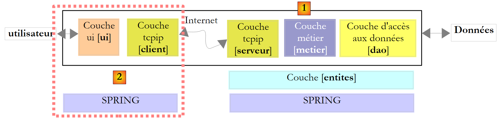 |
La couche [client] du client a été écrite. Il nous reste à écrire la couche [ui]. Revenons au projet Visual studio :
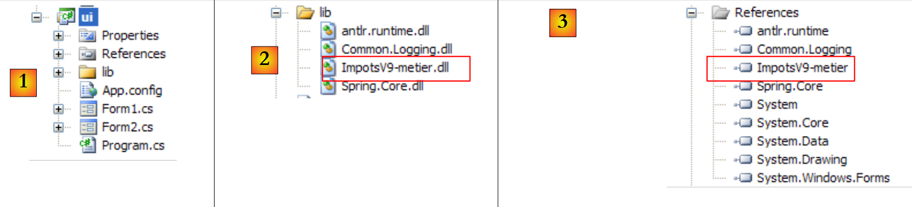 |
- en [1], le projet [ui] issu de la version 8
- en [2], la DLL ImpotsV8-metier de l'ancienne couche [metier] est remplacée par la DLL ImpotsV9-metier de la nouvelle couche
- en [3], la DLL ImpotsV9-metier est ajoutée aux références du projet. Le second changement intervient dans [App.config]. Il faut se rappeler que ce fichier est utilisé par Spring pour instancier la couche [metier]. Comme celle-ci a changé, la configuration de [App.config] doit changer. D'autre part, [App.config] doit avoir la configuration permettant de joindre le service web distant de calcul d'impôt. Cette configuration a été générée dans le fichier [app.config] du projet [metier] lorsque la référence au service web distant y a été ajoutée.
Le fichier [App.config] devient donc le suivant :
- lignes 15-18 : Spring n'instancie qu'un objet, la couche [metier]
- ligne 16 : la couche [metier] est instanciée par la classe [Metier.ImpotMetierWs] qui se trouve dans la DLL ImpotsV9-metier.
- lignes 22-46 : la configuration du client du service web distant. C'est un copier / coller du contenu du fichier [app.config] du projet [metier]. On est prêts. On exécute l'application par Ctrl-F5 ( le service web doit être lancé, le SGBD MySQL5 doit être lancé, le port ligne 42 ci-dessus doit être le bon) :
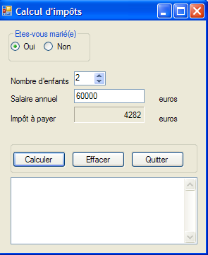 |
12.5. Un client web pour le service web de calcul d'impôt
Reprenons l'architecture de l'application client / serveur qui vient d'être écrite :
 |
La couche [ui] ci-dessus était implémentée par un client graphique windows. Nous l'implémentons maintenant avec une interface web :
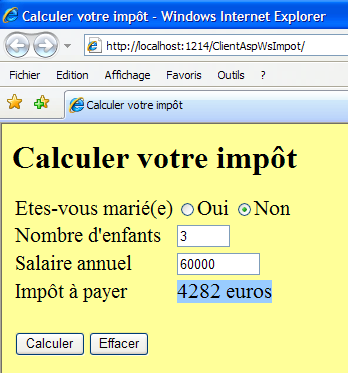 |
C'est un changement important pour les utilisateurs. Actuellement notre application client / serveur, version 9, peut servir plusieurs clients simultanément. C'est une amélioration vis à vis de la version 8 où elle ne servait qu'un client à la fois. La contrainte est que les utilisateurs désireux d'utiliser le service web de calcul d'impôt doivent disposer sur leur poste du client windows que nous avons écrit. Dans cette nouvelle version, que nous appellerons version 10, les utilisateurs pourront avoir accès, avec leur navigateur, au service web de calcul d'impôt.
Dans l'architecture ci-dessus :
- le côté serveur ne bouge pas. Il reste ce qu'il est dans la version 9.
- côté client, la couche [client du service web] ne bouge pas. Elle a été encapsulée dans la DLL [ImpotsV9-metier]. Nous allons réutiliser cette DLL.
- au final le seul changement consiste à remplacer une interface graphique windows par une interface web. Nous allons aborder de nouvelles notions de programmation web côté serveur. Le but de ce document n'étant pas d'enseigner la programmation web, nous essaierons d'expliquer la démarche qui va être suivie mais sans entrer dans les détails. Il y aura donc un côté un peu "magique" dans cette section. Il nous semble cependant intéressant de faire cette démarche pour montrer un nouvel exemple d'architecture multi-couches où l'une des couches est changée.
L'architecture de la version 10 est donc la suivante :
 |
Nous avons déjà toutes les couches, sauf celle de la couche [web]. Pour mieux comprendre ce qui va être fait, nous avons besoin d'être plus précis sur l'architecture du client. Elle sera la suivante :
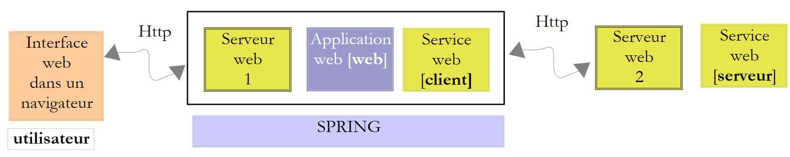 |
- l'utilisateur web a dans son navigateur un formulaire web
- ce formulaire est posté au serveur web 1 qui le fait traiter par la couche [web]
- la couche [web] aura besoin des services du client du service web distant, encapsulé dans [ImpotsV9-metier.dll].
- le client du service web distant communiquera avec le serveur web 2 qui héberge le service web distant.
-
la réponse du service web distant va remonter jusqu'à la couche web du client qui va la mettre en forme dans une page qu'il va envoyer à l'utilisateur. Notre travail ici est donc :
-
de construire le formulaire web que verra l'utilisateur dans son navigateur
- d'écrire l'application web qui va traiter la demande de l'utilisateur et lui envoyer une réponse sous la forme d'une nouvelle page web. Celle-ci sera en fait la même que le formulaire dans lequel on aura rajouté le montant de l'impôt à payer
- d'écrire la "glue" qui fait que tout ça marche ensemble. Tout ceci sera fait à l'aide d'un nouveau site web créé avec Visual Web Developer :
 |
- [1] : prendre l'option File / New Web Site
- [2] : choisir une application de type ASP.NET Web Site
- [3] : choisir le langage de développement : C#
- [4] : indiquer le dossier où créer le projet
 |
- [5] : le projet créé dans Visual Web Developer
- [Default.aspx] est une page web appelée la page par défaut. C'est celle qui sera délivrée si on demande l'Url http://.../ClientAspImpot sans préciser de document. C'est cette page qui contiendra le formulaire de calcul de l'impôt que l'utilisateur verra dans son navigateur.
- [Default.aspx.cs] est la classe associée à la page, celle qui va générer le formulaire envoyé à l'utilisateur puis le traiter lorsque celui-ci l'aura rempli et validé.
- [web.config] est le fichier de configuration de l'application. Contrairement aux fois précédentes nous allons le garder. Si nous revenons à l'architecture que nous devons construire :
 |
- [1] va être implémentée par [Default.aspx]
- [2] va être implémentée par [Default.aspx.cs]
- [3] va être implémentée par la DLL [ImpotV9-metier] Commençons par implémenter la couche [3]. Il y a plusieurs étapes :
 |
- en [1], le dossier [lib] du client graphique windows version 9 est copié dans le dossier du projet web [ClientAspWsImpot]. Cela se fait avec l'explorateur windows. Pour faire apparaître ce dossier dans la solution Web Developer, il faut rafraîchir la solution avec le bouton [2].
- puis les ajouter aux références du projet [3,4,5]. Les Dll référencées sont automatiquement recopiées dans le dossier /bin du projet [6]. On a désormais les Dll nécessaires au fonctionnement de Spring et la couche client du service web distant est également implémentée. Si le code de celui-ci est bien présent, sa configuration reste à faire. Dans la version 9, il était configuré par le fichier [App.config] suivant :
Nous reprenons cette configuration à l'identique et l'intégrons au fichier [web.config] de la façon suivante :
- ...
On notera que la ligne 37 référence le port du service web distant. Ce port peut changer puisque Visual Developer lance le service web sur un port aléatoire.
Revenons à l'architecture du client web que nous devons construire :
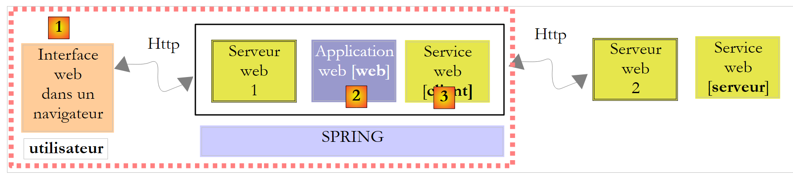 |
- [1] va être implémentée par [Default.aspx]
- [2] va être implémentée par [Default.aspx.cs]
- [3] a été implémentée par la DLL [ImpotV9-metier] Nous venons d'implémenter la couche [3]. Nous passons à l'interface web [1] implémentée par la page [Default.aspx]. Double-cliquons sur la page [Default.aspx] pour passer en mode conception.
 |
Il y a deux façons de construire une page web :
- graphiquement comme en [2]. Il faut alors choisir le mode [Design] en [1]. On trouvera cette barre de boutons en bas dans la barre d'état de l'éditeur de la page web.
- avec un langage de balises comme en [3]. Il faut alors choisir le mode [Source] en [1]. Les modes [Design] et [Source] sont bidirectionnels : une modification faite en mode [Design] se traduit par une modification en mode [Source] et vice-versa. Rappelons que le formulaire web à présenter dans le navigateur est le suivant :
 |
- en [1], le formulaire affiché dans un navigateur
- en [2], les composants utilisés pour le construire
- en [3], la page de conception du formulaire. Il comprend les éléments suivants :
- ligne A, deux boutons radio nommés RadioButtonOui et RadioButtonNon
- ligne B, une zone de saisie nommée TextBoxEnfants et un label nommé LabelErreurEnfants
- ligne C, une zone de saisie nommée TextBoxSalaire et un label nommé LabelErreurSalaire
- ligne D, un label nommé LabelImpot
- ligne E, deux boutons nommés ButtonCalculer et ButtonEffacer Une fois un composant déposé sur la surface de conception, on a accès à ses propriétés :
 |
- en [1], accès aux propriétés d'un composant
- en [2], la fiche des propriétés du composant [LabelErreurEnfants ]
- en [3], (ID) est le nom du composant
- en [4], nous avons donné la couleur rouge aux caractères du label. Il n'est pas suffisant de déposer des composants sur le formulaire puis de fixer leurs propriétés. Il faut également organiser leur disposition. Dans une interface graphique windows, cette disposition est absolue. On fait glisser le composant là où on veut qu'il soit. Dans une page web, c'est différent, plus complexe mais aussi plus puissant. Cet aspect ne sera pas abordé ici.
Le code source [Default.aspx] généré par cette conception est le suivant :
On reconnaît les composants du formulaire aux lignes 23, 24, 33, 36, 44, 47, 55, 63 et 66. Le reste est essentiellement de la mise en forme.
Revenons à l'architecture que nous devons construire :
 |
- [1] a été implémentée par [Default.aspx]
- [2] va être implémentée par [Default.aspx.cs]
- [3] a été implémentée par la DLL [ImpotV9-metier] Les couches [1] et [3] sont désormais implémentées. Il nous reste à écrire la couche [2], celle qui génère le formulaire, l'envoie à l'utilisateur, le traite lorsque celui-ci le lui renvoie rempli, utilise la couche [3] pour le calcul de l'impôt, génère la page web de réponse à l'utilisateur et la lui renvoie. C'est le code [Default.aspx.cs] qui fait tout ce travail :
C'est un code très proche de celui d'un formulaire windows classique. C'est l'avantage principal de la technologie ASP.NET : il n'y a pas de rupture entre le modèle de programmation windows et celui de la programmation web ASP.NET. Il faut simplement toujours se souvenir du schéma suivant :
 |
Lorsque qu'en [1], l'utilisateur va cliquer sur le bouton [Calculer], la procédure ButtonCalculer_Click de la ligne 6 de [Default.aspx.cs] va être exécutée. Mais entre-temps :
- les valeurs du formulaire rempli vont transiter du navigateur au serveur web via le protocole Http
- le serveur ASP.NET va analyser la demande et la transférer à la page [Default.aspx]
- la page [Default.aspx] va être instanciée.
- ses composants (RadioButtonOui, RadioButtonNon, TextBoxEnfants, TextBoxSalaire, LabelErreurEnfants, LabelErreurSalaire, LabelImpot) vont être initialisés avec la valeur qu'ils avaient lorsque le formulaire a été envoyé initialement au navigateur grâce à un mécanisme appelé "ViewState".
- les valeurs postées vont être affectées à leurs composants (RadioButtonOui, RadioButtonNon, TextBoxEnfants, TextBoxSalaire). Ainsi si l'utilisateur a mis 2 comme nombre d'enfants, on aura TextBoxEnfants.Text="2".
- si la page [Default.aspx] a une méthode [Page_Load], celle-ci sera exécutée
- la méthode [ButtonCalculer_Click] de la ligne 6 sera exécutée si c'est le bouton [Calculer] qui a été cliqué
- la méthode [ButtonEffacer_Click] de la ligne 10 sera exécutée si c'est le bouton [Effacer] qui a été cliqué Entre le moment où l'utilisateur crée un événement dans son navigateur et celui où il est traité dans [Default.aspx.cs], il y a une grande complexité. Celle-ci est cachée et on peut faire comme si elle n'existait pas lorsqu'on écrit les gestionnaires d'événements de la page web. Mais on ne doit jamais oublier qu'il y a le réseau entre l'événement et son gestionnaire et qu'il n'est donc pas question de gérer des événements souris tels Mouse_Move qui provoqueraient des aller /retour client / serveur coûteux ...
Le code des gestionnaires des clics sur les boutons [Calculer] et [Effacer] est celui qu'on aurait écrit pour une application windows classique :
- pour comprendre ce code, il faut savoir
- qu'au début de son exécution, le formulaire [Default.aspx] est tel que l'utilisateur l'a rempli. Ainsi les champs (RadioButtonOui, RadioButtonNon, TextBoxEnfants, TextBoxSalaire) ont les valeurs saisies par l'utilisateur.
- qu'à l'issue de son exécution, la même page [Default.aspx] va être renvoyée à l'utilisateur. Cela est fait de façon automatique. La procédure ButtonCalculer_Click doit donc à partir des valeurs actuelles des champs (RadioButtonOui, RadioButtonNon, TextBoxEnfants, TextBoxSalaire) fixer la valeur de tous les champs (RadioButtonOui, RadioButtonNon, TextBoxEnfants, TextBoxSalaire, LabelErreurEnfants, LabelErreurSalaire, LabelImpot) de la nouvelle page [Default.aspx] qui va être renvoyée à l'utilisateur.
Il n'y a pas de difficulté particulière à ce code. Seule la ligne 27 mérite d'être expliquée. Elle utilise la méthode CalculerImpot d'un champ Global.Metier qui n'a pas été rencontré. Nous allons y revenir prochainement.
La méthode ButtonEffacer_Click est la suivante :
Revenons à l'architecture que nous devons construire :
 |
- [1] a été implémentée par [Default.aspx]
- [2] a été implémentée par [Default.aspx.cs]
-
[3] a été implémentée par la DLL [ImpotV9-metier] Il nous reste à mettre la "glue" autour de ces trois couches. Il s'agit essentiellement :
-
d'instancier la couche [3] au démarrage de l'application
-
d'en mettre une référence dans un endroit où la page web [Default.aspx.cs] pourra aller la chercher à chaque fois qu'elle sera instanciée et qu'on lui demandera de calculer l'impôt. Ce n'est pas un problème nouveau. Il a déjà été rencontré dans la construction du service web distant et étudié au paragraphe 12.4.1, page 401. On sait que la solution consiste :
-
à créer un fichier [Global.asax] associé à une classe [Global.cs]
- à instancier la couche [3] dans la méthode Application_Start de [Global.cs]
- à mettre la référence de la couche [3] dans un champ statique de la classe [Global.cs], car la durée de vie de cette classe est celle de l'application. Aussi notre projet web évolue-t-il de la façon suivante :
 |
- en [1], le fichier [Global.asax].
- en [2], le code [Global.cs] associé. Le dossier [App_Code] dans lequel se trouve ce fichier n'est pas présent par défaut dans la solution web. Utiliser [3] pour le créer. Le fichier Global.asax est le suivant :
Le code [Global.cs] est le suivant :
- ligne 6 : la classe s'appelle Global et fait partie de l'espace de noms WsImpot (ligne 4). Aussi son nom complet est-il WsImpot.Global et c'est ce nom qu'il faut mettre dans l'attribut Inherits de Global.asax.
- ligne 6 : on sait que la classe associée à Global.asax doit obligatoirement dériver de la classe System.Web.HttpApplication.
- ligne 12 : la méthode Application_Start exécutée au démarrage de l'application web.
- ligne 15 : on intancie la couche [metier] (couche [3] de l'application en cours de construction) à l'aide de Spring et de la configuration suivante dans [web.config] :
La classe [Metier.ImpotMetierWS] de la ligne (g) ci-dessus se trouve dans [ImpotsV9-metier.dll].
La référence de la couche [metier] créée est mise dans le champ statique de la ligne 9. C'est ce champ qui est utilisé dans la ligne 27 de la procédure ButtonCalculer_Click :
Nous sommes prêts pour un test. Il faut lancer le SGBD MySQL5, le service web distant et noter le port sur lequel il opère :
 |
Ceci fait, il faut vérifier que dans le fichier [web.config] du client web, le port du service web distant est bon :
 |
Ceci fait, le client web du service web distant peut être lancé par Ctrl-F5 :
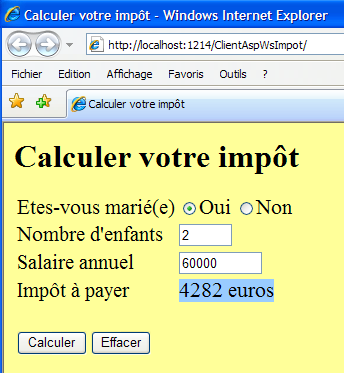 |
12.6. Un client console Java pour le service web de calcul d'impôt
Afin de montrer que les services web sont accessibles par des clients écrits dans un langage quelconque, nous écrivons un client Java console basique. L'architecture de l'application client / serveur sera la suivante :
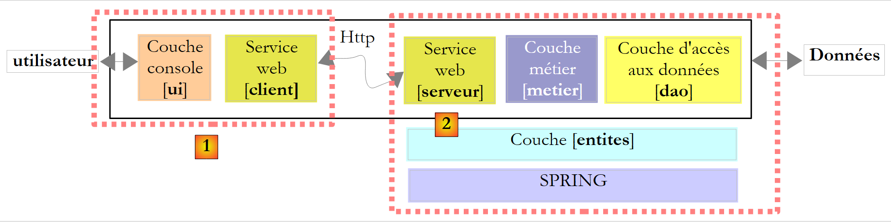 |
- le client [1] sera écrit en Java
- le serveur [2] est celui écrit en C# Tout d'abord, nous allons changer un détail dans notre service web de calcul d'impôt. Sa définition actuelle dans [ServiceImpot.cs] est la suivante :
Les tests ont montré que l'accent du paramètre marié des lignes 6 et 8 pouvait être un problème dans l'interopérabilité Java / C#. Nous adopterons la nouvelle définition suivante :
Ce service sera placé dans un nouveau projet Web Developer appelé WsImpotsSansAccents. Le service web aura alors l'Url [/WsImpotSansAccents/ServiceImpot.asmx].
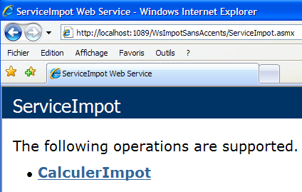
Pour écrire le client Java, nous utiliserons l'IDE Netbeans [http://www.netbeans.org/] :
 |
- en [1], créer un nouveau projet
- en [2,3], choisir un projet Java de type Java Application.
- en [4], passer à l'étape suivante
- en [5], donner un nom au projet
- en [6], indiquer le dossier où un sous-dossier portant le nom du projet sera créé pour lui
- en [7], donner un nom à la classe qui va contenir la méthode main exécutée au démarrage de l'application
- en [8], terminer l'assistant
 |
- en [9] : le projet Java généré
- en [10] : clic droit sur le projet pour générer le client du service web de calcul d'impôt
 |
- en [11], l'Url du fichier décrivant le service web de calcul d'impôt : http://localhost:1089/WsImpotSansAccents/ServiceImpot.asmx?WSDL
Cette Url est celle du service [ServiceImpot.asmx] à laquelle on ajoute le paramètre ?WSDL. Le document situé à cette Url décrit en langage Xml ce que sait faire le service [15]. C'est un élément standard d'un service web.
- en [12], le package (équivalent de l'espace de noms du C#) dans lequel mettre les classes qui vont être générées
- en [13], laisser la valeur par défaut
- en [14], terminer l'assistant
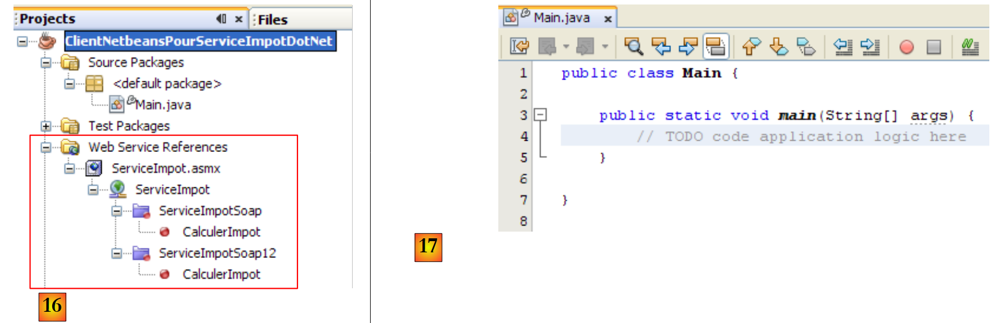 |
- en [16], le service web importé a été intégré au projet Java. Il supporte deux protocoles de communication Soap et Soap12.
- en [17], la classe [Main] dans laquelle nous allons utiliser le client généré
 |
- en [18], nous allons insérer du code dans la méthode [main]. Mettre le curseur à l'endroit où le code doit être inséré, cliquer droit et prendre l'option [19]
- en [20], indiquer que vous voulez générer le code d'appel de la fonction CalculerImpot du service distant de calcul d'impôt puis faire Ok. Le code généré dans [Main] est le suivant :
Le code généré montre comment appeler à la fonction CalculerImpot du service distant de calcul d'impôt. Si on fait le parallèle avec ce qui a été vu en C#, la variable port de la ligne 7 est l'équivalent du client utilisé en C#. Nous ne commenterons pas davantage ce code. Nous le réaménageons de la façon suivante :
- ligne 1 : nous importons la classe ServiceImpot qui représente le client généré par l'assistant.
- ligne 6 : nous appelons la méthode distante CalculerImpot en suivant la procédure indiquée dans le code généré dans main. Les résultats obtenus dans la console à l'exécution (F6) sont les suivants :